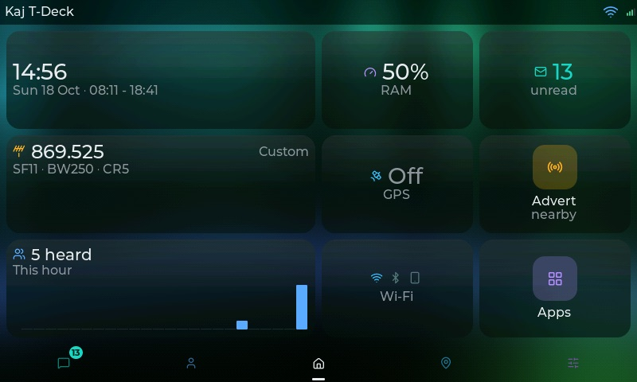
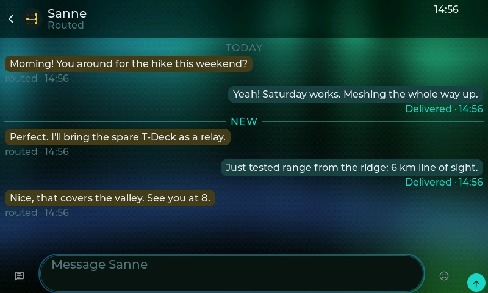
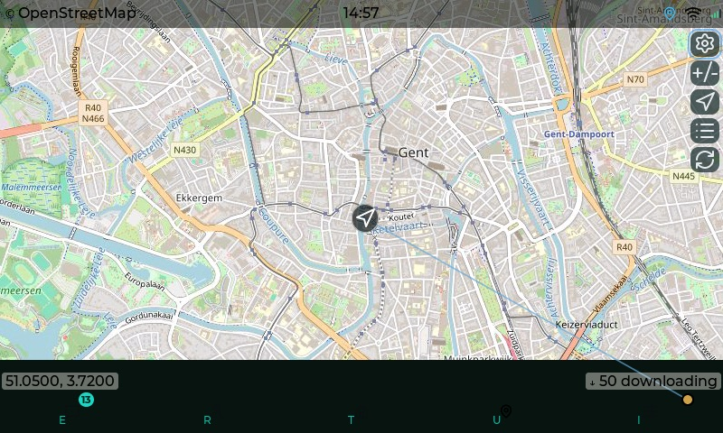
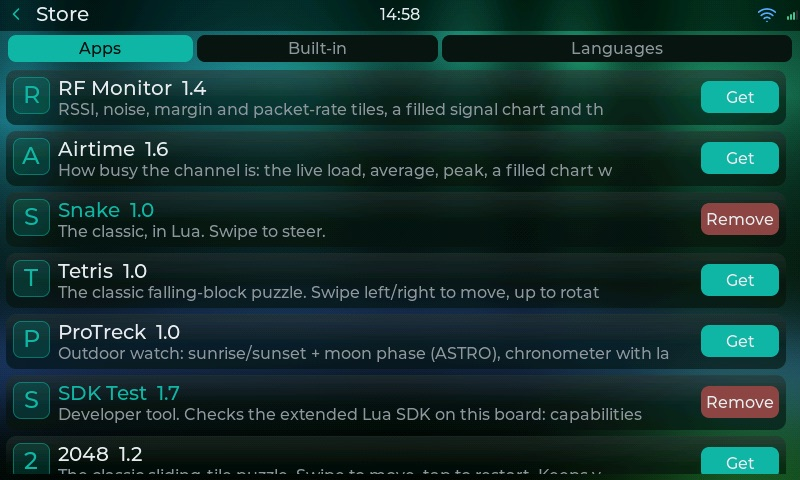

WADAMESH in your browser
The same interface you run on a T-Deck or a Heltec, in a browser tab. Try it on demo data, or connect it to your own MeshCore companion node over a USB cable, Bluetooth or Wi-Fi, from a computer or a phone. Free, nothing to install, no account.




The real interface, not a lookalike
The web client is built from exactly the same code that runs on the devices, so it looks and behaves the same and gets every improvement with each release. Your browser does the drawing; the node does the radio. Anything a MeshCore companion node can do through its app link, the web client can do: chats, channels, rooms, contacts, repeater status and telemetry, repeater admin, the terminal, settings for your node, the map, the Store and its apps.
Connect your node
Open the web client, press Connect and pick how your node is attached. It works with stock MeshCore companion firmware as well as WADAMESH and meshcomod. The page remembers your choice and reconnects by itself next time.
USB cable
Chrome or Edge on a computer
- Plug the node into the computer with a data cable.
- Press Connect, then USB cable.
- Pick the node's port in the browser's list.
Bluetooth
Chrome or Edge on a computer or an Android phone
- Turn Bluetooth on, on the node.
- Press Connect, then Bluetooth.
- Pick the node and enter its PIN if it asks.
Wi-Fi
Any browser, nodes with WADAMESH or meshcomod firmware
- Turn Wi-Fi on, on the node, on the same network as you.
- Open the Wi-Fi version (wifi.app.wadamesh.com) of the web client.
- Press Connect, then Wi-Fi, and type the node's address.
Why a separate Wi-Fi version? Nodes speak plain, unencrypted WebSocket on your network (encryption is too heavy for the radio's chip next to Wi-Fi), and browsers do not let a secure https page open an unencrypted connection. The Wi-Fi version is the same client on plain http. Browsers in turn only allow USB, Bluetooth and your location on secure pages, so those work in the main version.
Where it works
| Demo | USB | Bluetooth | Wi-Fi | Your location | |
|---|---|---|---|---|---|
| Chrome or Edge, computer | Yes | Yes | Yes | Yes | Yes |
| Firefox or Safari, computer | Yes | No | No | Yes | Yes |
| Android, Chrome | Yes | Depends on the phone | Yes | Yes | Yes |
| iPhone and iPad | Yes | No | No | Yes | Yes |
Apple does not allow USB or Bluetooth from a web page in any iPhone or iPad browser, so on those the web client connects over Wi-Fi only. On a phone the interface switches to portrait, uses your phone's own keyboard, and can be added to your home screen to open like an app.
Your data stays with you
Kept in your browser
Chat history, settings and installed apps live in this browser on this device, nowhere else. Each node you connect gets its own storage, separate from the demo. Use Backup this browser in the page menu to move everything to another browser or computer.
Your location
The browser asks before it shares your location, and the web client uses it for the map, distances and bearings. It only reaches your node, and from there the mesh, when that node's own "share my position" setting is on, exactly as with a GPS on a device.
What is different from a device
Works the same
- Chats, channels, rooms and contacts
- Repeater status, telemetry and admin
- The map, with tiles and your location
- The Store, Lua apps and languages
- Your node's settings and the terminal
Only on a device
- The radio tools: Spectrum, RF Monitor and Airtime
- Discover scans and wardriving
- Sound, the SD card and USB Files
- Firmware updates (the web client is always the latest)
Questions
Do I need a WADAMESH device?
No. Any MeshCore companion node works, including stock MeshCore firmware on a Heltec, RAK or T-Beam. The demo needs no node at all.
Is it the MeshCore app?
No, it is the WADAMESH interface. It talks to your node over the same companion link the MeshCore app uses, so you use one or the other at a time on a given connection.
Does anything go through your servers?
The page itself, map tiles and the app Store come from wadamesh.com. Your messages go straight between your browser and your node.
Can I use it offline?
Once loaded, chatting through a connected node keeps working without internet. Map tiles and the Store need a connection.
Something does not work
Ask on Discord or open an issue, and say which browser and node you use.
Open source under GPL-3.0, like the firmware. Back to wadamesh.com